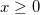

Poisspdf
Poisspdf-func
Definition:
poisspdf(X,lambda) returns the Poisson probability density function at each of the values in X using mean parameters in lambda.
/math-8a6961f413a3a8f346d5b19de10c5e9f.png "f(x|\lambda )=\frac{\lambda ^x}{x!}e^{-\lambda }I_{(0,1,...)}(x)")
Parameters:
- x (input, integer)
- 
- lambda (input, double)
/math-336a97d18d66c095def5ab62b9889a8b.png "\lambda >0") .
.
See Also
Cauchypdf, exppdf, gampdf, Lappdf, Lognpdf, Normpdf